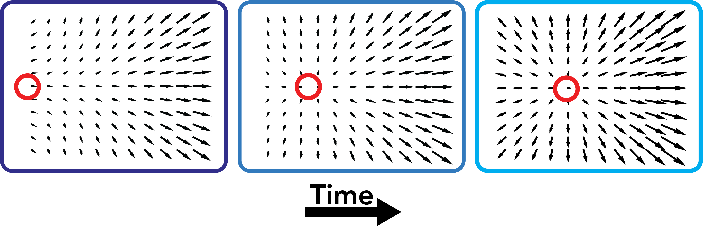
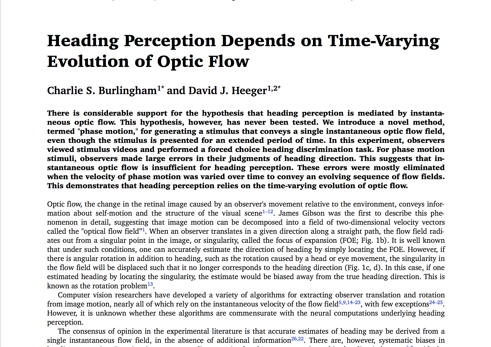
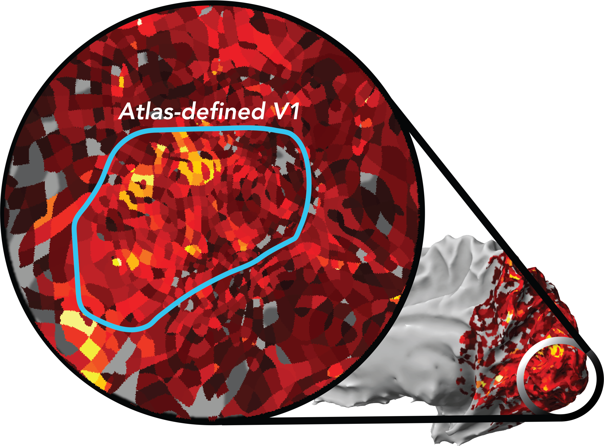

Charlie Burlingham
charlie [dot] burlingham [at] nyu [dot] edu
grad student in
Heeger Lab
(NYU) &
NDSEG
fellow
Projects
Heading perception depends on time-varying optic flow

preprint

poster
Widespread task-related hemodynamic responses are modulated by feedback and difficulty

poster